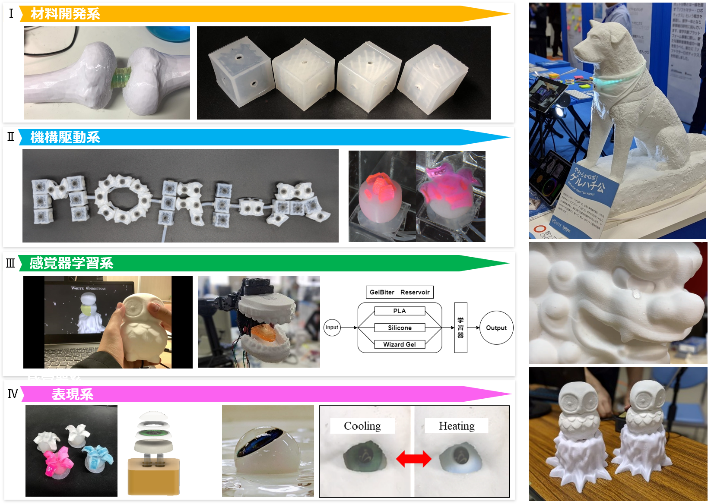
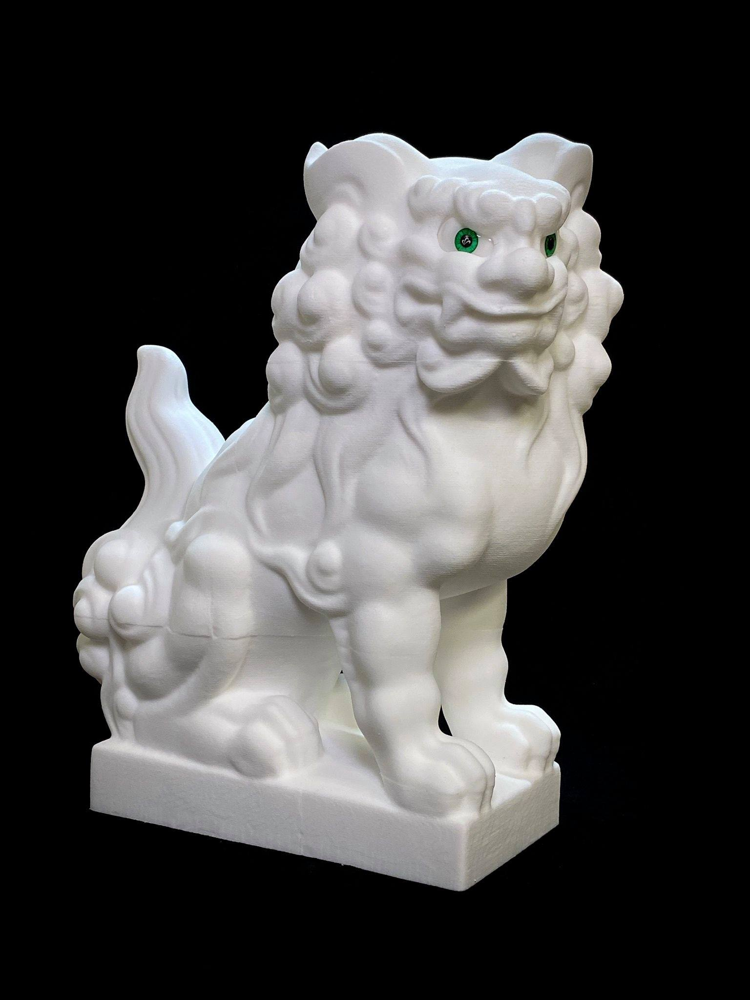
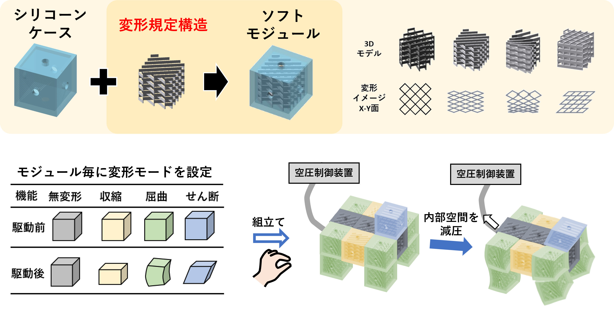
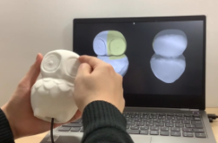

研究紹介
クリエイティブ・ソフトマシンズ
クリエイティブ・ソフトマシンズの研究では，ソフト・ハイブリッド材料や3Dプリンティング構造を組み合わせた『やわらかモノづくり』を通して，やわらかいモノから知能を創る方法や，3Dソフト材料だからこそ実現できるやわらかい機構を開発します．
これまでの研究業績はResearch mapを参照
- PROJECT
- やわらかアニマロイドプロジェクト
- 材料開発系
- 代表的な研究事例はこちら
3D印刷型形状記憶ゲルによる超ソフト材料の形状記憶・固定化・復元技術
3D印刷型パラレル・クロス構造を用いた汎用性の高い変形機構の開発 - 機構駆動系
- 代表的な研究事例はこちら
3D印刷型変形構造とシリコーンシェルによるモジュール型空気圧アクチュエータの開発
3D印刷型シリコーンによるハイドロゲルの膨潤変形過程の制御によるゲルロボティクス - 感覚器学習系
- 代表的な研究事例はこちら
ヒューマン・ソフトマシン・インタラクションの開発
ソフト材料の物性が物理レザバー計算精度に及ぼす因子の分析
高分子材料の組合せによるマルチ物理（ソフトマター）レザバー計算による食感識別AI - 表現系
- 代表的な研究事例はこちら
ゲル×人工生命技術の融合によるゲルライフの確立
ゲルの演出的機能性を導出する材料の3D構造化 - 社会実装
- 代表的な研究事例はこちら
やわらかアニマロイド研究で発明された技術は積極的に知的財産化を目指し，
ただ作るだけに留めず，生活空間に配置されて接した人にポジティブな効果を与えることを
目指した活動を推進しています．

超ソフト・ハイブリッド材料によるやわらかアニマロイド『モデル・コマイヌ』の開発
柔らかい材料は衝撃を吸収したり，働いた力に応じて変形するなどの利点を持ちます．これらの材料を3D構造化するためには，その材料に対して離型性のよい型造形法や3Dプリンティング方法を選択し，材料のタック性（粘着性），硬化阻害性，自重に対する形状安定性を考慮した上で，材料を上手く使うアイディアを盛り込んでいく必要があります．この研究開発は硬い石造のイメージをもつコマイヌをモチーフに採用し，触れるまでは硬い印象をもちつつも，実際に手に触れると驚くほど柔らかい『人の脂肪』に似た触感になっており，相対する人に柔らかさを追究することでここまで生物感がでるのかを実感してもらうアニマロイドモデルをデザインしています．
3D印刷型変形構造とシリコーンシェルによるオールソフトなアクチュエータモジュール『MORI-A』の開発

ソフトアクチュエータ（人工筋肉）はゴムなど素材で非常に強い荷重を持ち上げることができる伸縮構造が追究されています．しかし，一般的にこれらのアクチュエータは棒状になっているケースが多く，駆動モードを変更するためにはアクチュエータごと作り直す必要があるなどの使いづらさがあります．『MORI-A』は，この課題を打破するために生まれた技術で，立方体のボクセル形状を採用し均一なシリコーンシェルに変形を規定する構造だけを3Dプリントにより造形することで，内部構造を取り替えたり，ボクセルの向きを変えるだけで，容易に駆動モードを更新できるアクチュエータモジュールとなっています．そのため，全くロボットの空気圧アクチュエータの開発スキルを必要とせず，積み木のように繋ぎ合わせるだけでだれしもが手軽にソフトロボット開発ができてしまいます．
J. Ogawa, T. Mori, Y. Watanabe, M. Kawakami, M. N. I. Shiblee and H. Furukawa, "MORI-A: Soft Vacuum-Actuated Module With 3D-Printable Deformation Structure", in IEEE Robotics and Automation Letters, vol. 7, no. 2, pp. 2495-2502, April 2022, doi: 10.1109/LRA.2022.3144789.
僅かなヤング率差に起因するシリコーン型フクロウアニマロイドによるヒューマン・ソフトマシン・インタラクション

実際の物理媒体に生じる非線形力学を機械学習に展開する計算手法に『物理レザバー計算』という概念があります．この研究では，ソフトマター×3Dプリンティングで開発されるやわらかアニマロイドにソフトセンサ―を搭載したときに得られる信号をソフトマターレザバー計算として活用できるかについて追究しています．このフクロウモデルはシリコーン内部に埋め込まれたピエゾフィルムセンサーからデータを受けとり，接触した部位判定をインタラクティブにどの程度精度で識別できるかという基礎検証（現在は100%で8分割部位を識別可能）に加え，ヤング率を少しだけ変えたときに物理レザバー計算による識別精度が最適化される機械学習のハイパーパラメータがどのようにチューニングされていくか詳細に分析しています．こうしたモデルはアカデミア研究という立ち位置のみならず，言語によるコミュニケーションが難しい小児などへの末梢神経障害の早期診断などへの応用を目指し，社会実装を進めています
Ikuma Sudo, Jun Ogawa, Yosuke Watanabe, MD Nahin Islam Shiblee, Ajit, Khosla, Masaru Kawakami, Hidemitsu Furukawa, "Local Discrimination Based on Piezoelectric Sensing in Robots Composed of Soft Matter with Different Physical Properties ", in Journal of Robotics and Mechatronics, vol. 34, no. 2, April 2022.